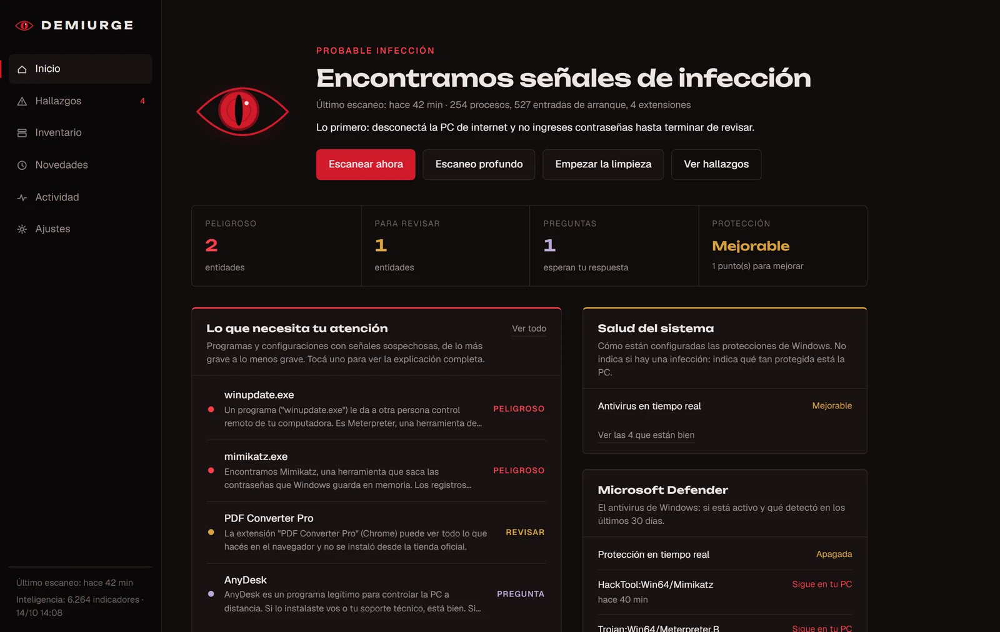
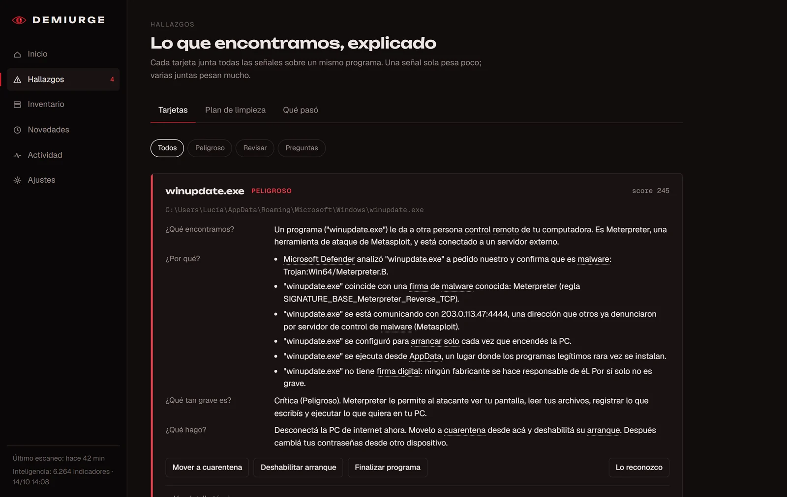
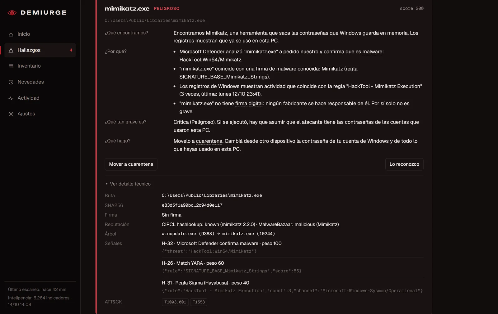
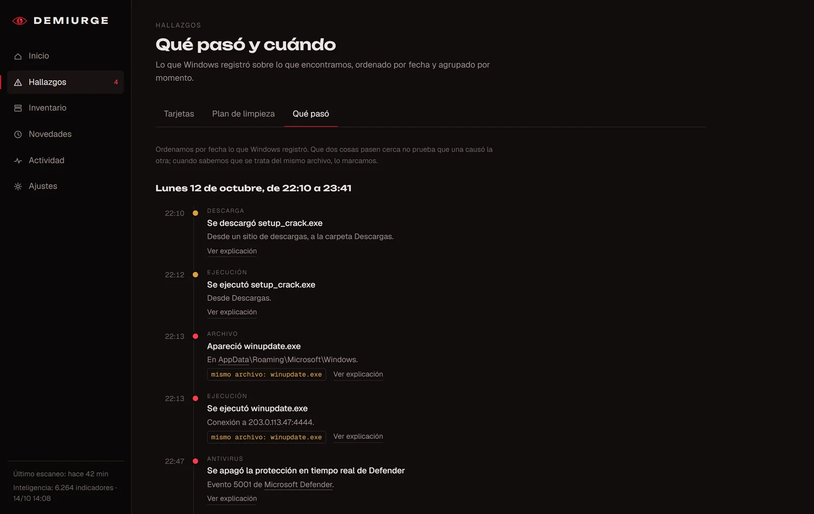
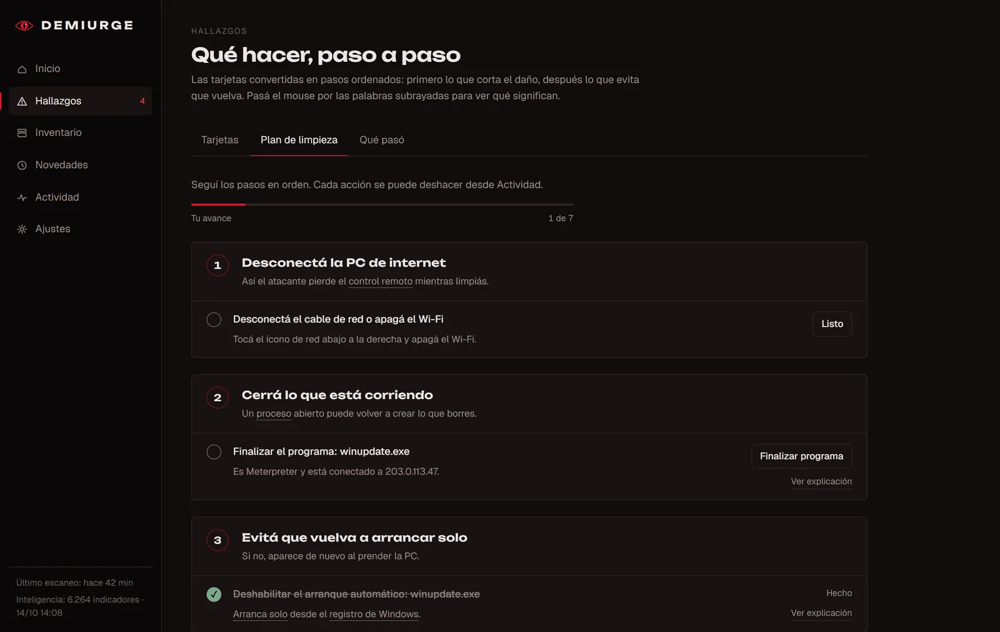

// case study · beta, discontinued
Demiurge
A Windows 10/11 desktop app that answers one question: is my PC clean or infected? It collects the traces Windows leaves behind, runs them through several detection engines and explains every finding in plain language.

01The idea
Demiurge is a visibility and second-opinion tool, not an antivirus: no real-time protection, nothing running in the background, and it doesn't replace Microsoft Defender.
It's built for home users with no technical background. Every finding answers four questions — what we found, why, how serious it is and what to do — with a hover glossary for technical words. For people who want more, each card also has a technical view with raw data, the rules that fired and the MITRE ATT&CK techniques involved.
02What it looks at
It inspects 28 areas of Windows through native APIs, aimed at the threats that actually hit home users: info-stealers, remote-access scams, "ClickFix" pasted commands, browser hijacking, rogue root certificates, Defender exclusions, tampered apps and brute-force logons.
03How it decides
Scoring happens per program, not per event. Forty rules feed it: a single weak signal stays informational, several together escalate. When engines disagree, the alarm is lowered and the card says so — fewer scary false positives for people who can't judge them.
Second opinion
Microsoft Defender, never deleting on its own
Malware traits in files
YARA-X + YARA Forge rules
Injected code
HollowsHunter / PE-sieve
Event logs
Hayabusa + Sigma rules
Threat intel, matched locally
abuse.ch, LOLBAS, LOLDrivers
Hash reputation, no uploads
CIRCL, MalwareBazaar, VirusTotal




04Explain, then act
Findings turn into a step-by-step cleanup plan, a "what happened" timeline with real timestamps (only linking events that involve the same file) and a diff against the previous scan. Fixes run only with confirmation and are reversible: disable startup entries, quarantine (never delete), remove extensions, restore browser, proxy and hosts settings. Everything can be undone except killing a process.




05Under the hood
.NET 10 with WPF + WebView2 hosting a React 19 + TypeScript UI, SQLite for storage, WMI and P/Invoke (WinVerifyTrust, iphlpapi, ntdll) for collection, and a WiX MSI installer. The engine runs in-process: closing the window ends everything — no service, no scheduled task. Bundled tools are pinned by version and SHA-256 and verified before every run.
src/Demiurge.Core engine: collectors, intel, rules, scoring, storage, actions
src/Demiurge.App desktop app (WPF + WebView2) and its React UI
src/Demiurge.Cli console for development and diagnostics
tests/ 102 tests, including the attacks from the security audit06Status
Discontinued in October 2026 as a beta. It was calibrated for false positives on a real PC without admin rights. Not verified: full behavior installed and elevated, actions on a real system, and detection against real malware in VMs.